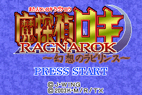

Matantei Loki Ragnarok - Gensou no Labyrinth (Japan)
EEPROM 4K Save Format Spec gbakit Built-In
Cartridge Identity
- Game Code
BMRJ(FamilyBMR)- Header Title
MATANTEILOKI- Maker / Revision
AH/ rev0- ROM Size
- 8.0 MiB (8,388,608 B)
- Save Media
EEPROM 4K- SHA-256
b2aa51f3f655eb48e0c62a0613b06d5f4d061a63e7f584ad0ec0358c462ef5e6- Engine / SDK Group
comm-002(145 families)
Screenshots


Battery Save Format Specification
Open Full Save Format SpecDownload Sample .sav (512 B)Download save-format.json
- Specification Coverage
- 10 mapped fields · 0 verified checksum(s) · Confidence: MEDIUM
- gbakit Built-In Support
- Built-in (BMRJ)
gbakit save verify BMRJ save.sav
gbakit save decode BMRJ save.sav
gbakit save fix BMRJ damaged.sav -o repaired.savObserved Battery Save Layout
- Fill Byte & Active Size
0xFFfill · 176–176 / 512 B active (entropy 0.15 bits/B)- Active Offset Ranges
0x0–0xAF(1 total)- ASCII Magic / Headers
- None detected
- Observed Variable Regions
- 2 bytes across 1 spans:
0x88–0x89 - Candidate Checksum/Counter Spans
0x88–0x89- Integrity Check
- Confirmed at
0x88
ROM Assets, Compression & Audio
- BIOS Compression
- LZ77 (
0x10): 0 streams · RLE (0x30): 0 streams - ROM Pointer Tables
- 43 tables (0 pointing to validated compressed streams)
- SDK Backup Tags
EEPROM_V124
Hardware MMIO Subsystems
ppu_display0x8000408,0x8000f0c,0x8001384